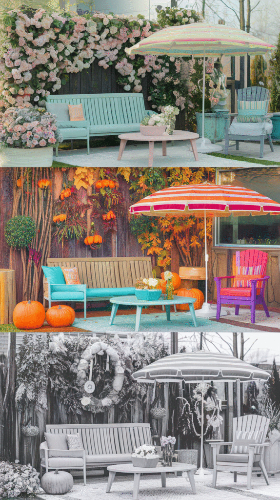
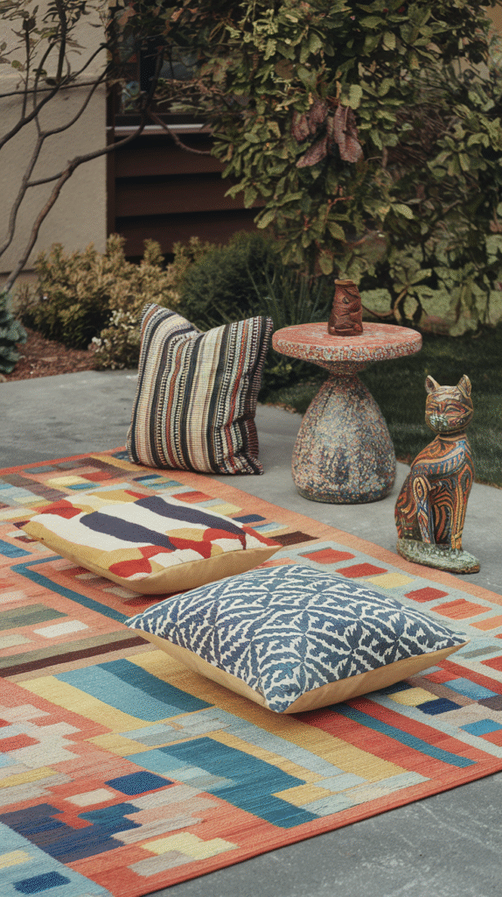
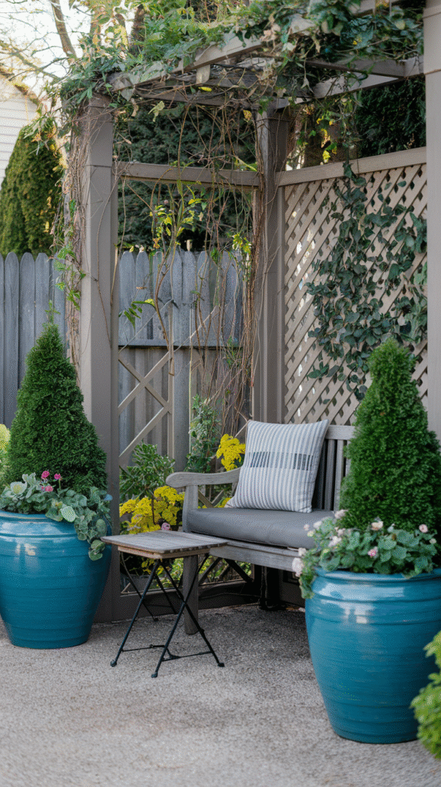
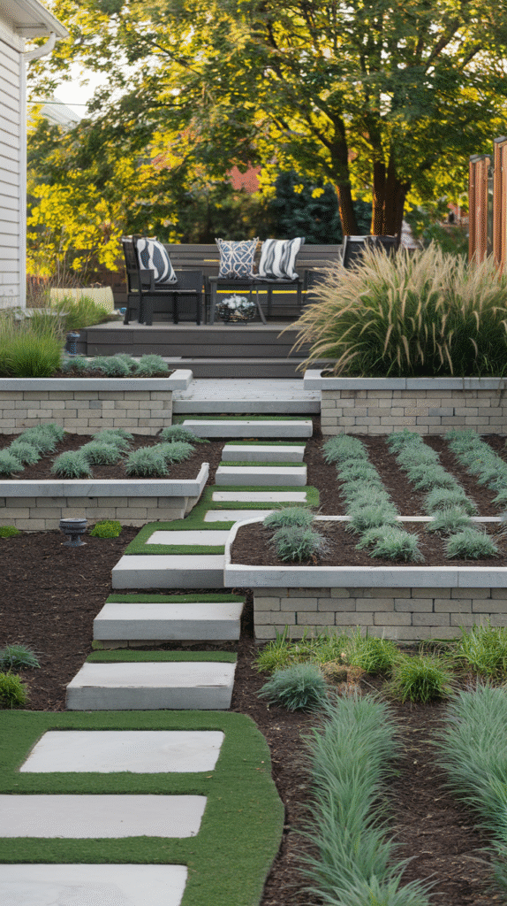
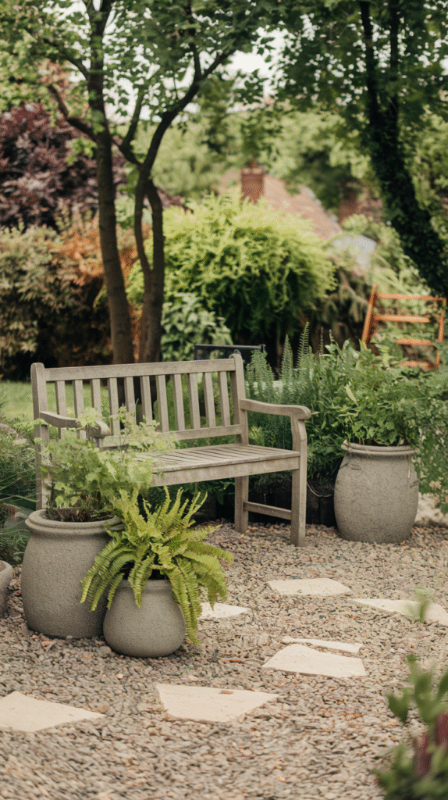
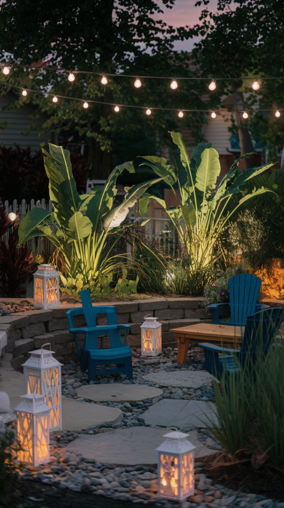
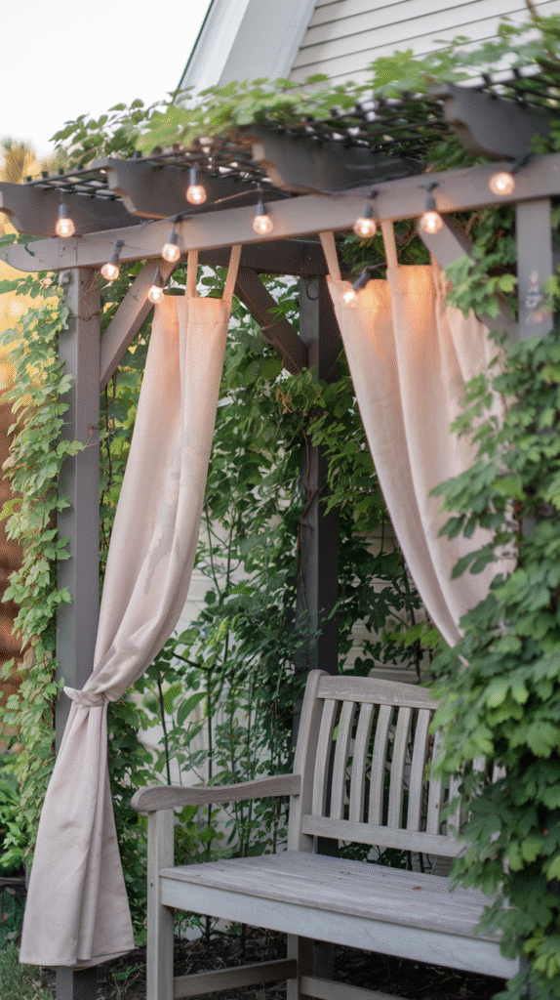
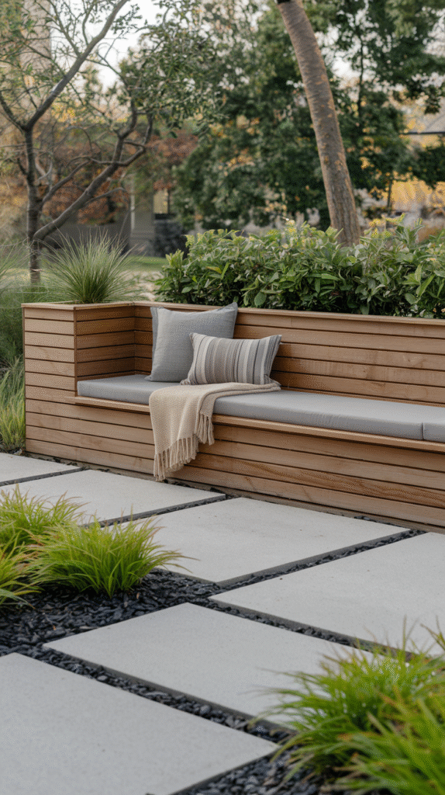
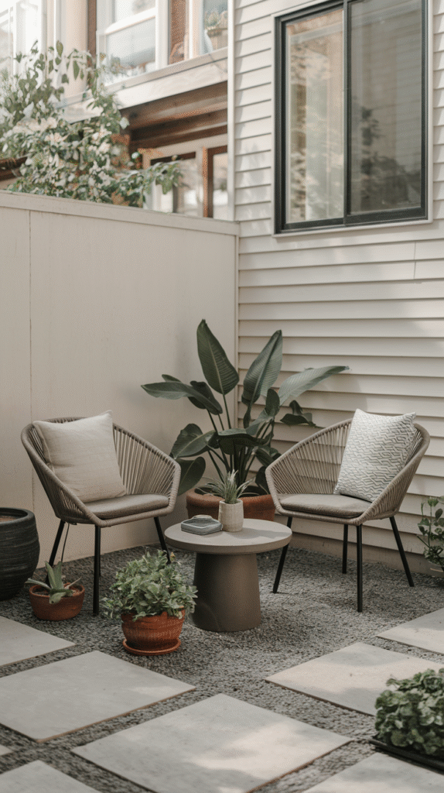
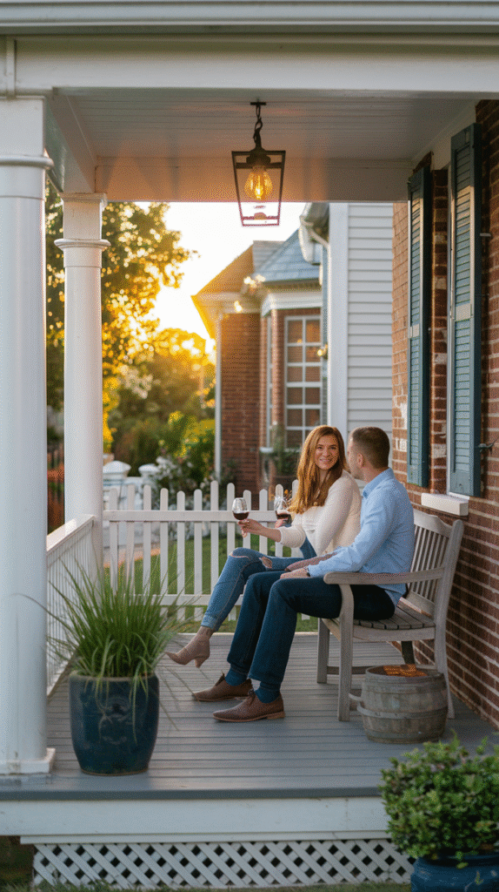

The front porch gets all the attention, but it isn't the only spot in the front yard worth sitting in.
A separate seating nook, tucked under a tree or framed by plants, gives a home a second destination that a porch alone can't provide.
These 11 ideas cover how to make that spot genuinely worth using, not just another patch of forgotten lawn furniture nobody ever sits in.

Why Bother With a Front Yard Sitting Area
A dedicated spot to sit in the front yard changes how a home actually gets used, it invites being outside on purpose, not just passing through on the way to the car.
It also adds real curb appeal, giving the front of the house a sense of life that extends beyond the entrance itself.
1. Keep It Seasonal
Swapping cushions, planters, and small decor as the seasons change keeps the space feeling fresh and tended rather than frozen in the same state all year.
It also signals to the whole street that the space is actively cared for, which matters more for a front-facing nook than it ever would for one tucked in the backyard.

2. Incorporate Personal Touches
A favorite planter, a piece of outdoor art, or one specific color choice makes the space feel like it genuinely belongs to the people who use it.
That's the detail that separates a generic seating setup from one that actually reflects the home's own character.

3. Make It Private, Not Fortress-Like
A low hedge, a slatted screen, or simply an angled layout can create a sense of privacy from the street without sealing the space off entirely.
The goal is a spot that feels a little tucked away, not one that reads as closed off from the rest of the neighborhood.

4. Frame It With Plants
Shrubs, tall grasses, or a few well-placed planters frame a seating area the same way walls do indoors, giving it a real sense of enclosure.
That framing also softens the transition between the nook and the rest of the lawn or walkway, instead of leaving it to sit there exposed.

5. Get Creative With Levels and Layers
A slightly raised platform, a step down, or layered planting beds around the seating add visual interest a single flat surface simply can't offer.
Changing the elevation even a little also helps define the sitting area as its own distinct space, rather than an extension of the open lawn around it.

6. Go Modern With Minimalist Furniture
Clean-lined furniture in a neutral palette suits a contemporary home's front yard far better than a rustic or heavily ornate setup would.
Fewer, more considered pieces read as more intentional here than a fully furnished seating arrangement ever would.

7. Light It for Evening Use
String lights, a single lantern, or a low path light extend a sitting area's use well past the point the sun goes down.
It's one of the lower-cost additions on this entire list, and arguably the one that makes the biggest difference in how often the space actually gets used.

8. Add a Pergola
A pergola in the front yard brings the same shaded, defined-space benefit it would offer in a backyard, just angled toward the street instead.
Climbing plants trained up the structure soften it over time and tie the whole thing further into the surrounding landscaping.

9. Lean Into Natural Elements
Wood, stone, and greenery all bring a relaxed, grounded feel that manufactured materials on their own can't really match.
This works especially well tucked near existing landscaping, where the sitting area ends up feeling like it grew out of the yard rather than being set on top of it.

10. Go Bold With a Built-In Bench
A built-in bench, framed by landscaping or attached to a low wall, gives a sitting area real permanence that freestanding furniture never quite achieves.
It's a bigger commitment than movable furniture, but in exchange it becomes a defining architectural feature of the yard rather than just an object someone placed there.

11. Think Small and Cozy
A sitting area doesn't need to be large to work, a single bench or two chairs tucked into a defined nook often feels more inviting than a sprawling setup ever would.
That smaller scale also makes the whole project far more approachable for a tighter front yard or a more modest budget.

A Little Effort, A Lot of Charm
None of these 11 ideas require redoing the entire front yard in one go.
Start small, a bench, some evening lighting, a bit of framing greenery, and let the space earn more attention and investment as it proves itself.
A front yard sitting nook is consistently one of the highest-charm, lowest-effort additions a home can make, and one of the easiest to get wrong by overbuilding it from the start.